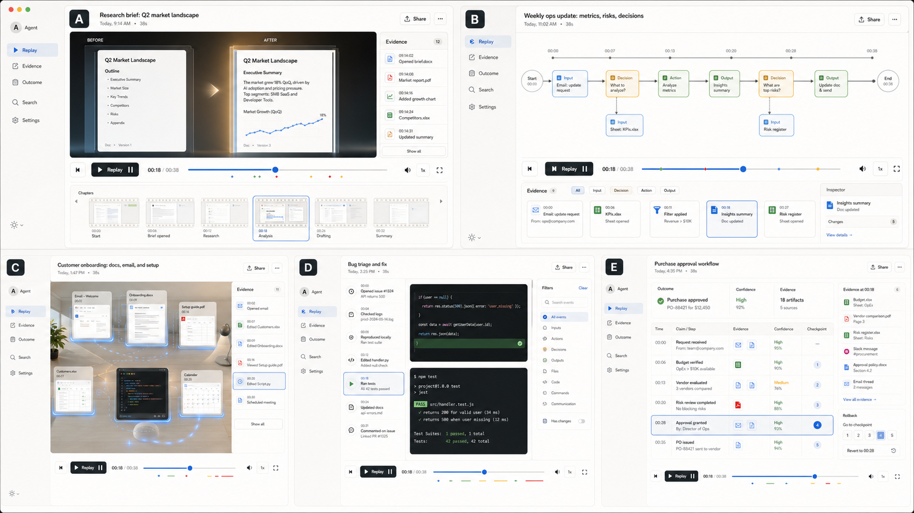
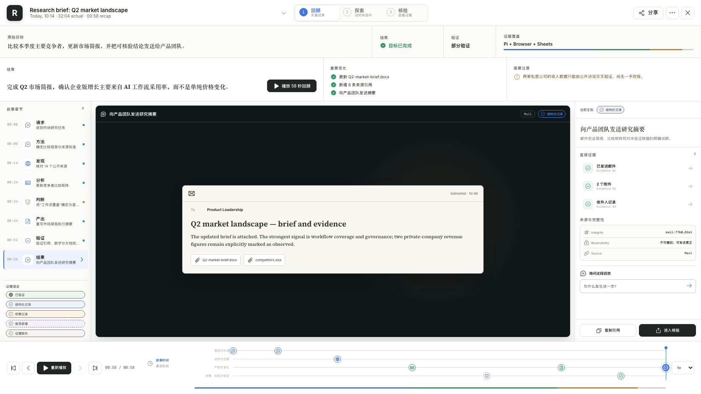

Agent Replay V3 — design QA comparison
The source is a five-projection concept board; the implementation is the unified Recap projection using the same visual language.
Source visual truth1672 × 941

Browser-rendered implementation1672 × 941 · Recap · final event

Focused region comparisonReplay hierarchy, stage, evidence, controls
Source A — low-friction replay
Implementation — unified Recap